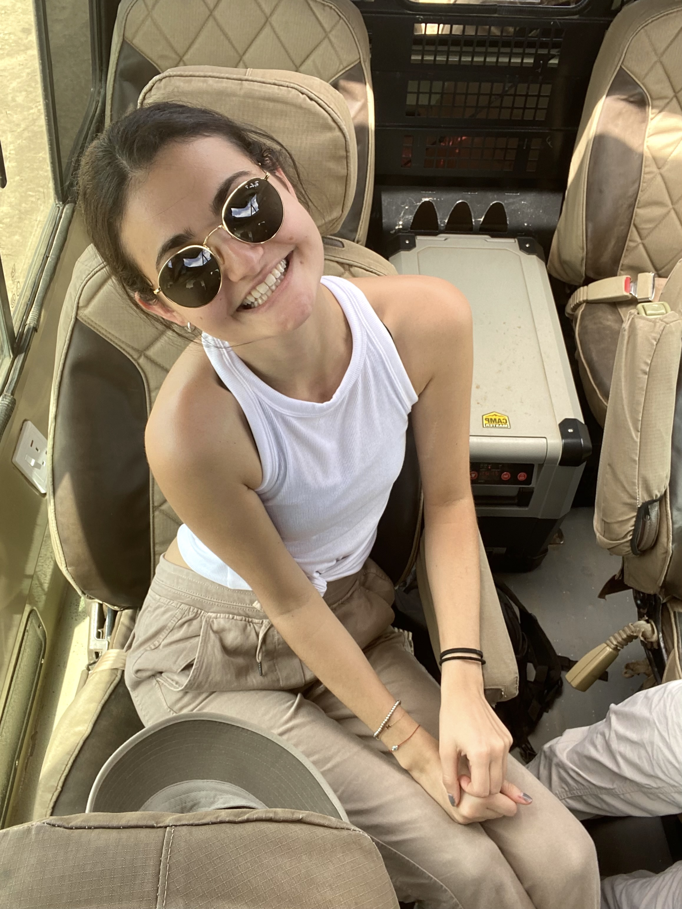
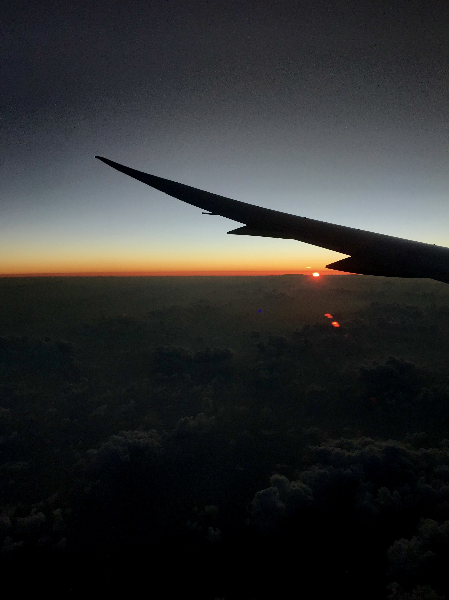

WELCOME
Hi, I'm Maya! Welcome to my travel site. One of my favorite activities is traveling and visit other parts of the world. I am so fortunate to been able to explore both near and far. I hope you enjoy!
My travel photo journal is divided by areas of the world. You can see pictures of sites, restaurants, and nature from Europe, various places in North and Central America, and Africa. I want to travel to even more places. Next on my bucket list is Morocco and Italy. Stay tuned!
